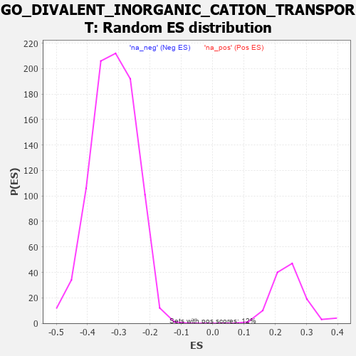

| | | Dataset | 7d |
| Phenotype | NoPhenotypeAvailable |
| Upregulated in class | na_neg |
| GeneSet | GO_DIVALENT_INORGANIC_CATION_TRANSPORT |
| Enrichment Score (ES) | -0.5863778 |
| Normalized Enrichment Score (NES) | -1.8440695 |
| Nominal p-value | 0.0 |
| FDR q-value | 0.010045013 |
| FWER p-Value | 0.224 |
Table: GSEA Results Summary
 Fig 1: Enrichment plot: GO_DIVALENT_INORGANIC_CATION_TRANSPORT
Fig 1: Enrichment plot: GO_DIVALENT_INORGANIC_CATION_TRANSPORT
Profile of the Running ES Score & Positions of GeneSet Members on the Rank Ordered List
| PROBE | GENE SYMBOL | GENE_TITLE | RANK IN GENE LIST | RANK METRIC SCORE | RUNNING ES | CORE ENRICHMENT | | 1 | THADA | | | 253 | 0.931 | -0.0162 | No |
| 2 | BAX | | | 387 | 0.711 | -0.0209 | No |
| 3 | PARL | | | 1290 | 0.432 | -0.1278 | No |
| 4 | CSN2 | | | 1656 | 0.363 | -0.1678 | No |
| 5 | JPH1 | | | 1741 | 0.347 | -0.1726 | No |
| 6 | FMR1 | | | 1816 | 0.334 | -0.1762 | No |
| 7 | CUL5 | | | 1947 | 0.314 | -0.1874 | No |
| 8 | MCUR1 | | | 1953 | 0.313 | -0.1826 | No |
| 9 | MICU1 | | | 1954 | 0.313 | -0.1773 | No |
| 10 | ANO6 | | | 2339 | 0.255 | -0.2216 | No |
| 11 | SPG7 | | | 2525 | 0.223 | -0.2412 | No |
| 12 | PHB2 | | | 2712 | 0.197 | -0.2614 | No |
| 13 | MAGT1 | | | 2780 | 0.186 | -0.2668 | No |
| 14 | ERO1A | | | 2925 | 0.162 | -0.2822 | No |
| 15 | CDK5 | | | 3480 | 0.080 | -0.3511 | No |
| 16 | CHERP | | | 3587 | 0.062 | -0.3634 | No |
| 17 | ATG5 | | | 4051 | -0.016 | -0.4218 | No |
| 18 | PDE4B | | | 4089 | -0.022 | -0.4262 | No |
| 19 | ABL1 | | | 4125 | -0.027 | -0.4301 | No |
| 20 | WNK3 | | | 4153 | -0.034 | -0.4330 | No |
| 21 | STAC | | | 4327 | -0.064 | -0.4538 | No |
| 22 | OPA1 | | | 4330 | -0.065 | -0.4529 | No |
| 23 | TMCO1 | | | 4451 | -0.085 | -0.4667 | No |
| 24 | JPH3 | | | 4481 | -0.091 | -0.4688 | No |
| 25 | PLPP4 | | | 4533 | -0.101 | -0.4735 | No |
| 26 | MICU3 | | | 4571 | -0.110 | -0.4764 | No |
| 27 | LETM1 | | | 4644 | -0.127 | -0.4833 | No |
| 28 | NMUR2 | | | 4646 | -0.127 | -0.4813 | No |
| 29 | MYLK | | | 4651 | -0.128 | -0.4796 | No |
| 30 | ITPR1 | | | 4661 | -0.130 | -0.4785 | No |
| 31 | CNNM4 | | | 4738 | -0.147 | -0.4856 | No |
| 32 | PLCG1 | | | 4770 | -0.151 | -0.4870 | No |
| 33 | SARAF | | | 4781 | -0.153 | -0.4856 | No |
| 34 | MYO5A | | | 4787 | -0.155 | -0.4836 | No |
| 35 | P2RX4 | | | 4813 | -0.161 | -0.4840 | No |
| 36 | PDPK1 | | | 5043 | -0.207 | -0.5095 | No |
| 37 | DRD2 | | | 5088 | -0.221 | -0.5113 | No |
| 38 | ITPR3 | | | 5361 | -0.288 | -0.5409 | No |
| 39 | GRIN1 | | | 5381 | -0.291 | -0.5383 | No |
| 40 | NIPA2 | | | 5441 | -0.305 | -0.5406 | No |
| 41 | EFHB | | | 5447 | -0.306 | -0.5360 | No |
| 42 | VDR | | | 5517 | -0.325 | -0.5392 | No |
| 43 | G6PD | | | 5638 | -0.358 | -0.5483 | No |
| 44 | CALCR | | | 5730 | -0.386 | -0.5532 | No |
| 45 | TRPC6 | | | 5784 | -0.401 | -0.5531 | No |
| 46 | STAC2 | | | 5987 | -0.466 | -0.5707 | No |
| 47 | TRPC3 | | | 6035 | -0.483 | -0.5684 | No |
| 48 | STIM1 | | | 6169 | -0.528 | -0.5763 | Yes |
| 49 | ATP7B | | | 6194 | -0.535 | -0.5702 | Yes |
| 50 | RGN | | | 6233 | -0.547 | -0.5656 | Yes |
| 51 | TRPM4 | | | 6390 | -0.612 | -0.5750 | Yes |
| 52 | DYSF | | | 6481 | -0.654 | -0.5752 | Yes |
| 53 | TRPV4 | | | 6515 | -0.668 | -0.5680 | Yes |
| 54 | REM1 | | | 6530 | -0.676 | -0.5582 | Yes |
| 55 | P2RX5 | | | 6576 | -0.699 | -0.5520 | Yes |
| 56 | TRPM8 | | | 6781 | -0.800 | -0.5642 | Yes |
| 57 | NMUR1 | | | 6821 | -0.828 | -0.5550 | Yes |
| 58 | DNM1L | | | 6963 | -0.913 | -0.5572 | Yes |
| 59 | TSPO | | | 7194 | -1.065 | -0.5682 | Yes |
| 60 | ANK2 | | | 7298 | -1.170 | -0.5613 | Yes |
| 61 | TRPM1 | | | 7324 | -1.197 | -0.5440 | Yes |
| 62 | VDAC1 | | | 7512 | -1.409 | -0.5436 | Yes |
| 63 | TRPM3 | | | 7544 | -1.461 | -0.5226 | Yes |
| 64 | CALM1 | | | 7567 | -1.499 | -0.4998 | Yes |
| 65 | TRPV6 | | | 7569 | -1.502 | -0.4743 | Yes |
| 66 | BEST1 | | | 7601 | -1.554 | -0.4517 | Yes |
| 67 | TRPA1 | | | 7625 | -1.608 | -0.4271 | Yes |
| 68 | PKD1 | | | 7628 | -1.611 | -0.3999 | Yes |
| 69 | MCU | | | 7644 | -1.637 | -0.3738 | Yes |
| 70 | TRPM6 | | | 7645 | -1.637 | -0.3459 | Yes |
| 71 | TRPM2 | | | 7680 | -1.712 | -0.3210 | Yes |
| 72 | ASIC1 | | | 7726 | -1.838 | -0.2953 | Yes |
| 73 | TRPM7 | | | 7761 | -1.936 | -0.2665 | Yes |
| 74 | PDE4D | | | 7764 | -1.944 | -0.2336 | Yes |
| 75 | PKD2 | | | 7822 | -2.167 | -0.2038 | Yes |
| 76 | CLCA1 | | | 7824 | -2.171 | -0.1669 | Yes |
| 77 | CALM3 | | | 7869 | -2.525 | -0.1293 | Yes |
| 78 | FYN | | | 7881 | -2.622 | -0.0859 | Yes |
| 79 | CAV3 | | | 7896 | -2.739 | -0.0409 | Yes |
| 80 | NPSR1 | | | 7913 | -2.947 | 0.0073 | Yes |
Table: GSEA details [plain text format]

Fig 2: GO_DIVALENT_INORGANIC_CATION_TRANSPORT: Random ES distribution
Gene set null distribution of ES for GO_DIVALENT_INORGANIC_CATION_TRANSPORT